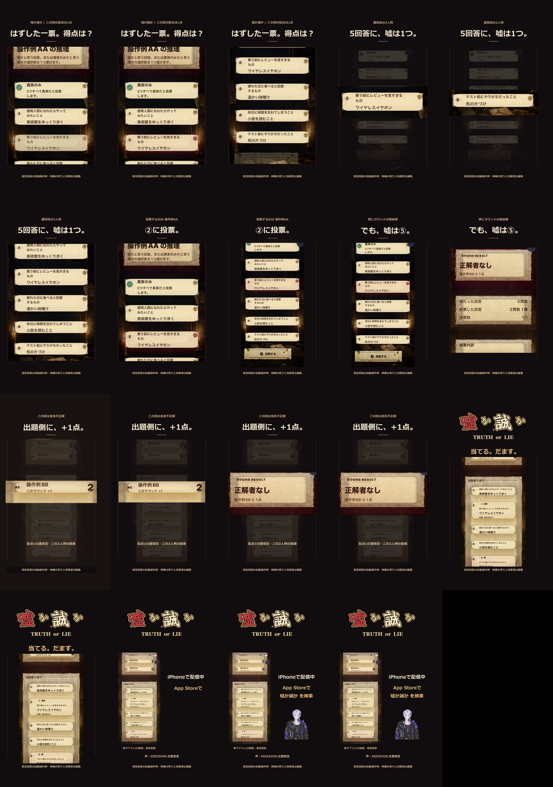

嘘か誠か v9
YouTube公開版を見る · 2026-10-28 23:50:20 JST公開
投票を外したら、誰に得点？ 実アプリの選択・判定・得点を見せる19.2秒です。通常回・2人・配点1の架空回答例。
完成動画2本をNASに登録済み。元とのSHA一致とNASからの全デコードを確認しました。納品記録はREADME-v9.mdを参照。
\\100.105.2.75\private\work\videos\2026-10-28\嘘か誠か\2257_投票と得点_実画面改_v09\
BGM版.mp4／声・効果音版.mp4。編集原本と依存素材はFのrevision-05-real-roundに保持。
制作・検査・納品記録 · 投稿文とクレジット · App Store配信先

声：VOICEVOX:玄野武宏。BGM：Cipher／Kevin MacLeod／CC BY4.0。公式匿名ページで公開・本人チャンネル・説明とクレジット一致を確認。直接通し視聴・主観試聴と成長効果は未確認。TikTokアプリ内音源選定は別工程。